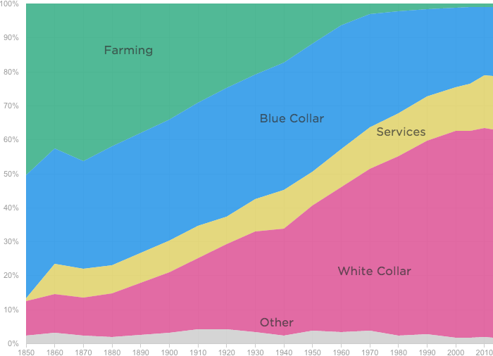

The Decline Of Farming And The Rise Of Everything Else
Graph by:
Percent Of Jobs
Number of jobs

Notes
White collar includes professional and technical, managerial, sales and clerical jobs. Blue collar includes machine operators, assembly, manual labor and construction jobs. Service includes food service, health care and personal service jobs